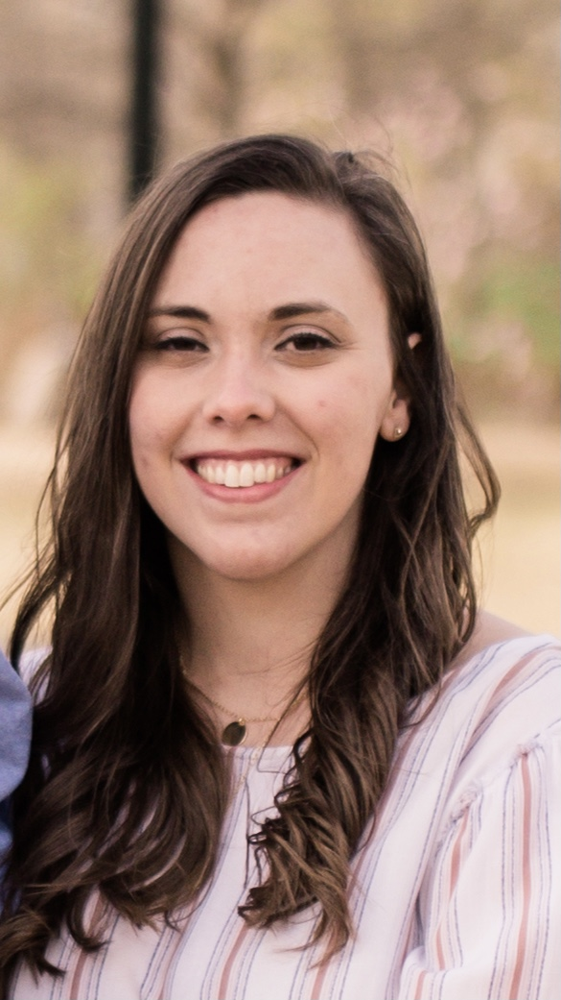

 Sweet Speech is owned by Whitney Hendrickson. Whitney is an ASHA certified speech-language pathologist specializing in treating speech sound disorders. She has worked with children ages 4-18 in public schools on their communication skills, including language, fluency, voice, and speech sounds. After working for 3 years in person at schools, Whitney switched to serving her students as a teletherapist for 2 years. After seeing the effectivness the teletherapy model still held for her students, particularly those working on speech sounds, and the increased opportunity it held for families to participate in outside therapy (without travel to a brick and mortar building), Whitney decided that it was time to provide an option for those families needing speech services outside of the school system with this flexible model. This is when Sweet Speech Teletherapy Services was created.